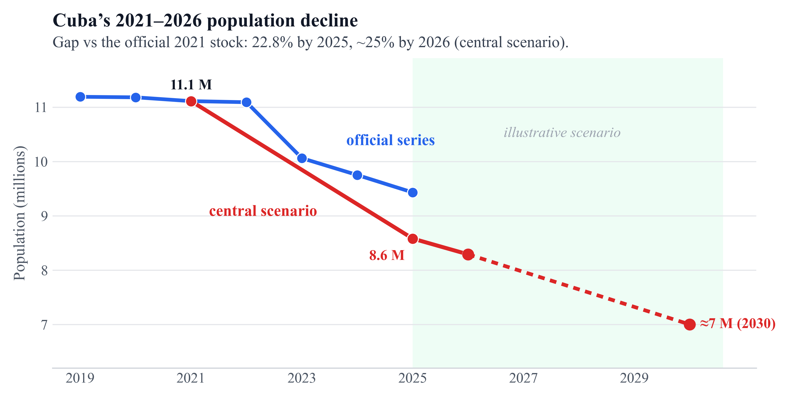
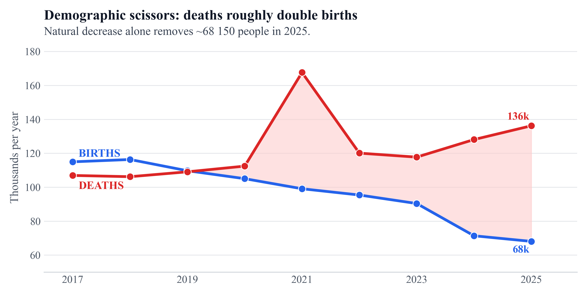
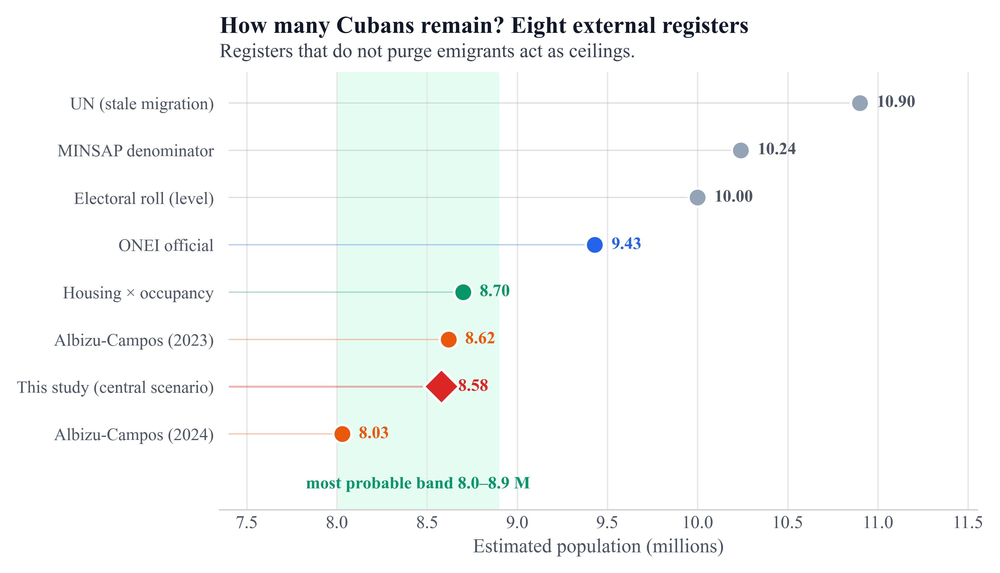
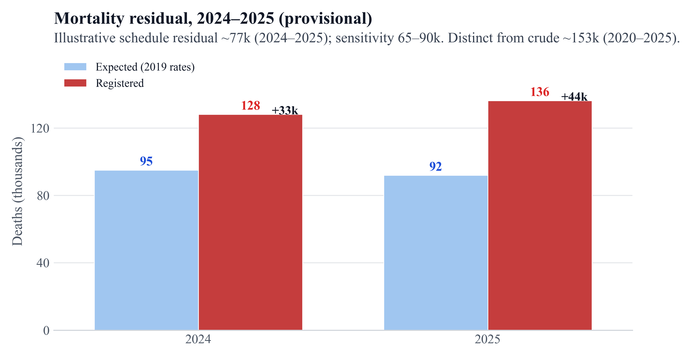

Official vs scenarios
ONEI ≈9.43 M vs scenario D ≈8.58 M (end-2025).

Demographic scissors
Deaths exceed births since 2020.

Eight sources, band 8.0–8.9 M
D = study estimand, not external validation.

Provisional residual 2024–2025
Illustrative ~28.5k/yr (band 18.6–38.2k); not Kitagawa.
